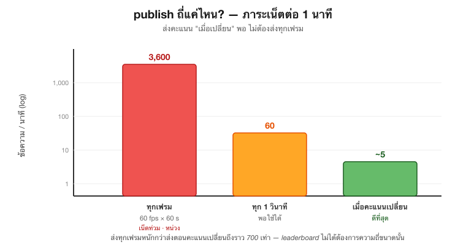

ส่งคะแนนถี่แค่ไหนพอดี?
leaderboard ไม่ใช่วิดีโอสด เราอยากเห็นคะแนน ล่าสุด ไม่ใช่คะแนนทุกเสี้ยววินาที — ดังนั้นอย่า publish ในทุกเฟรมของเกม

ถ้าเกมรันที่ f เฟรมต่อวินาที แล้ว publish ทุกเฟรม ภาระต่อ 1 นาทีคือ
Nmsg/min=f×60=60×60=3,600 ข้อความ/นาที
เทียบกับส่ง เมื่อคะแนนเปลี่ยน ซึ่งในเกมจริงเกิดไม่กี่ครั้งต่อนาที ภาระต่างกันเป็นหลักร้อยเท่า:
Nเมื่อเปลี่ยนNทุกเฟรม≈53,600≈700×
เก็บคะแนนล่าสุดที่ส่งไปไว้ในตัวแปร แล้ว publish ก็ต่อเมื่อ score != last_sent เท่านั้น — ลดภาระ broker, ลดเน็ตหน่วง, และคะแนนบนกระดานก็ยังสด นี่คือเทคนิคเดียวกับที่ใช้คุมอัตราส่งของเซ็นเซอร์จริงในงาน IoT
หมายเหตุ: ไฟล์เดโม s13_net.py ส่งคะแนนค่าคงที่ครั้งเดียว (my_score = 1250 แล้ว publish ที่ :47–50) เพื่อให้ทดสอบง่าย — การ์ด score != last_sent ด้านบนคือแพตเทิร์นที่ควรใส่เมื่อนำไปต่อในลูปเกมจริง ที่คะแนนเปลี่ยนได้